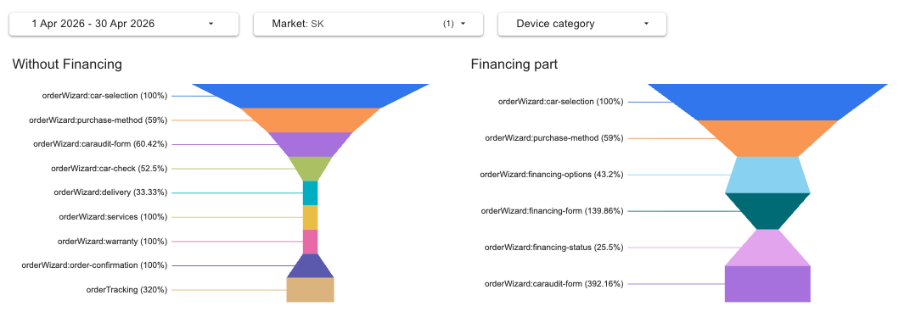
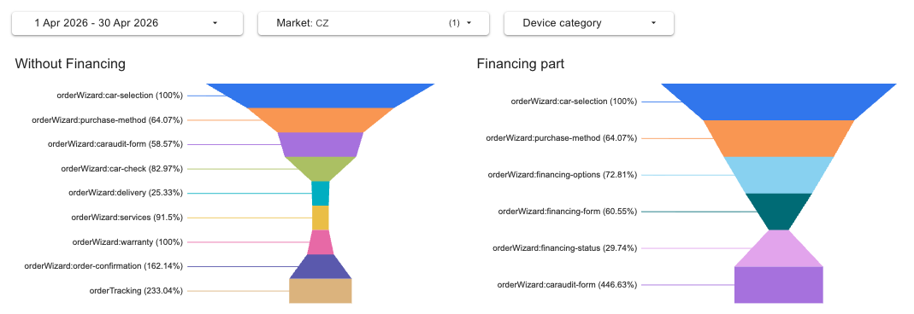
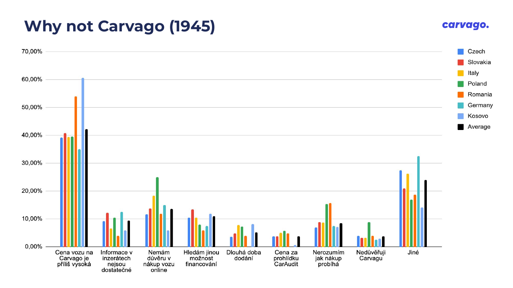

Author: Marie MichalovaCreated: 6 May 2026Last updated: 6 May 2026Status: Draft
Problem Statement
Conversion from New Opportunity to Paid CarAudit (unique per customer) in Slovakia is structurally about half of CZ across the entire 14-month window (SK 14–34% vs CZ 24–42%).
Two key inflections: a sharp drop in July 2025 following the auto-close-after-30-days rollout, and a continued bottoming-out around Dec 2025 (13.84%).
Unlike Italy, this is not a sudden cliff — it's a chronic structural gap with one acute trigger.
TL;DR — Top findings
SK conversion is structurally lower than CZ all year — SK runs at 50–70% of CZ's Paid/New-Opp rate every single month. The May 2025 new-flow deploy did not hurt SK (it briefly spiked +7pp). The acute trigger is July 2025, not the new flow. Section 1
Two SK-specific funnel cliffs vs CZ (April 2026): caraudit-form → car-check is 52.5% in SK vs 83.0% in CZ (−30pp), and purchase-method → financing-options is 43.2% in SK vs 72.8% in CZ (−30pp). Section 3
Financing approval rate is 16.2% in SK vs 40.3% in CZ (Nov 2025 – Apr 2026). 18% of lost financings are categorized as "other-reasons" (vs 1% in CZ) — the call center can't classify SK-specific friction with the existing reason codes. Section 3
SK call-center / sales process is also breaking down upstream: 76% of lost opps in SK are "auto-closed after 30 days in stage New" + 24% have no reason classification. CZ at least classifies 12% as "Without Offer" / "Seller Denied". SK lost-reason data is essentially blank. Section 3
Data source: [PROD] KPI sheet, countries = SK and CZ (benchmark).
Conversion = Paid Unique Per Customer / New Opportunities.
Slovakia vs Czechia: Monthly Funnel (Mar 2025 – Apr 2026)
Month
SK New Opps
SK Paid /Customer
SK Paid/New Opp %
CZ Paid/New Opp %
SK / CZ ratio
SK Trend
Apr 2026
500
84
16.80%
23.83%
71%
Mar 2026
462
75
16.23%
26.20%
62%
Feb 2026
414
64
15.46%
27.08%
57%
Jan 2026
369
71
19.24%
23.48%
82%
Dec 2025
289
40
13.84%
23.47%
59%
Nov 2025
383
82
21.41%
24.70%
87%
Oct 2025
548
90
16.42%
30.26%
54%
Sep 2025
362
87
24.03%
39.96%
60%
Aug 2025
313
61
19.49%
39.07%
50%
Jul 2025
311
65
20.90%
40.44%
52%
Jun 2025
296
87
29.39%
40.73%
72%
May 2025
316
108
34.18%
40.05%
85%
Apr 2025
342
93
27.19%
42.12%
65%
Mar 2025
335
90
26.87%
40.03%
67%
SK is structurally lower than CZ all year — with one acute inflection in July 2025
Chronic gap: SK Paid/New-Opp % runs at 50–87% of CZ every single month over the 14-month window. SK never reaches the CZ benchmark, even before any 2025 deploys.
Acute inflection: Jun → Jul 2025, −8.5 pp (29.39% → 20.90%). This coincides exactly with the auto-close-after-30-days-in-stage-New rollout in July 2025.
Bottom: Dec 2025 (13.84%), then partial recovery to ~16–19% in 2026. SK has not returned to the spring 2025 baseline.
Importantly, the May 2025 new-flow deploy (SK only, ~3 months earlier than other markets) did not hurt SK — it briefly improved the rate to a 14-month peak of 34.18%. SK's story is not about the new wizard flow.
SK-specific deploy timeline
May 6, 2025
New transaction flow rolled out to SK (multi-car cart, single active opportunity). SK got this ~3 months earlier than CZ/IT. Impact: SK Paid/New-Opp % went up briefly (Apr 27.19% → May 34.18%) before settling. The new flow is not a candidate cause for SK's drop.
July 2025 (all markets)
Auto-close-after-30-days in stage New rollout. SK Paid/New-Opp drops Jun → Jul by −8.5pp. This is the acute trigger for SK. Implication: SK had many opps sitting in "New" longer than 30d, so when auto-close switched on, those opps started counting as losses. This points to upstream slow follow-up — either call center cadence, lead-quality, or both.
End of September 2025
Radio-button CTA change — never released to SK. So SK's September drop pattern can't be blamed on it. (CZ, by contrast, dropped sharply in Oct 2025 immediately after this deploy.)
March 2026 (all markets)
Auto-close-after-30-days in stage Financing rollout. In CZ this added 116 lost financings (25% of CZ fin-lost) in the Nov 2025 – Apr 2026 window. SK has zero auto-closed-financing entries — either SK financings resolve faster, OR more likely the upstream opp is closed first, so financings inherit "opportunity-is-lost" (34% of SK fin-lost).
Caveat — the chronic vs acute distinction matters
Italy's investigation found a single dominant trigger (the August 2025 transaction flow). Slovakia's pattern is different: there is a chronic structural gap (SK 50–70% of CZ before any 2025 deploy) plus an acute July 2025 inflection. Recommendations need to address both layers — UX-level deploys did not create SK's gap; they only added a step down.
Reading the funnel
Percentages shown next to each step are the conversion rate from the previous step, not cumulative from the top. Numbers above 100% indicate path mixing — e.g. cash users skip financing-status and arrive at caraudit-form from a different upstream step, so step-to-step share at caraudit-form exceeds 100% relative to financing-status.
Side-by-side: SK vs CZ funnel (April 2026)

SK funnel — Without Financing (left) and Financing (right). 1–30 April 2026.

CZ benchmark funnel — same date range and step structure.
Without-Financing path: SK vs CZ
Step transition
SK
CZ
Gap (pp)
Note
car-selection → purchase-method
59.0%
64.1%
−5
Minor SK gap
purchase-method → caraudit-form
60.4%
58.6%
+2
SK on par
caraudit-form → car-check
52.5%
83.0%
−30
Cliff #1 — SK loses 30pp here
car-check → delivery
33.3%
25.3%
+8
SK actually better here
Financing path: SK vs CZ
Step transition
SK
CZ
Gap (pp)
Note
car-selection → purchase-method
59.0%
64.1%
−5
Minor SK gap
purchase-method → financing-options
43.2%
72.8%
−30
Cliff #2 — financing entry barrier
financing-options → financing-form
139.9%
60.6%
—
Path mixing — not directly comparable
financing-form → financing-status
25.5%
29.7%
−4
Small gap, both markets drop hard here
Two SK-specific cliffs vs CZ — both around −30pp
caraudit-form → car-check (SK 52.5% vs CZ 83.0%, −30pp). Customers who reach the CarAudit form abandon at the car-check step at 1.6× the CZ rate. This is the same pattern Italy showed — the CarAudit-related friction is not unique to one country.
purchase-method → financing-options (SK 43.2% vs CZ 72.8%, −30pp). SK customers who select financing as a payment method bail at 1.7× the CZ rate before they even see the financing options. This connects directly to the financing approval gap (Section 3) and suggests something on the financing-options screen, OR that SK customers select "financing" speculatively and disengage when reality hits.
Both cliffs are independently large enough to drive the headline conversion gap.
3. Financing & Lost-Reason Classification Gap
Salesforce data, Nov 2025 – Apr 2026 (last 6 months). Two angles in one section because they tell the same story: SK's downstream sales/financing process produces a lot of unclassified outcomes, which masks the actual barriers.
Financing approval rate: SK 16.2% vs CZ 40.3%
Final status
SK
CZ
fin-approved
4
139
fin-contract-signed
9
37
fin-final-documents-sent-to-bank
4
12
fin-completed
30
128
Total approved+ (any positive final state)
47
316
fin-lost
244
468
Approval rate (approved+ / approved+ + lost)
16.2%
40.3%
Caveat — this is partly downstream of opp-loss, not pure bank rejection.
34% of SK fin-lost (83 of 244) have reason opportunity-is-lost — i.e. the upstream Opportunity was closed first, and the financing inherited the loss. The pure bank-decision approval rate is higher than 16.2%, but still meaningfully below CZ's 40.3% even after this adjustment.
Lost financing reason codes
Reason
SK %
CZ %
Category
opportunity-is-lost
34%
21%
upstream
no-answer-from-customer
19%
9%
process
other-reasons
18%
1%
unclassified
payment-by-cash-or-credit-outside-carvago
9%
11%
customer
low-creditworthiness
6%
14%
bank
car-was-sold-by-dealer-to-another-customer
4%
1%
process
customer-opted-for-another-carvago-vehicle
4%
2%
customer
customer-is-debtor-or-records-in-registers
3%
11%
bank
bank-asked-for-co-guarantor-customer-denied
2.5%
0%
bank — SK-only
auto-closed-30d-financing (March 2026 deploy)
0%
25%
process
"Other-reasons" is 18% in SK vs 1% in CZ — an 18× gap
Either there's a systematic SK-specific friction the existing reason codes don't capture, OR the SK call center / F&I team isn't classifying at the same rigor as CZ. Likely both. Either way, this category alone hides 44 lost financings whose true cause is unknown to us. Identifying what sits inside "other-reasons" is a P0 action.
SK-only: bank-asked-for-co-guarantor (2.5%)
6 SK financings were lost because the bank required a co-guarantor and the customer declined. CZ has zero in this category. This points to a bank-pipeline-policy difference for SK.
Lost opportunity reason codes — SK classification is essentially blank
Reason
SK %
CZ %
Automatically closed after 30 days in stage New
76%
75%
NULL (no reason set)
24%
12%
Without Offer
0%
5%
Automatically closed after 30 days in stage Financing
0%
4%
Seller Denied
0%
2%
Business Denied
0.1%
0.5%
SK lost-opportunity reasons are essentially uncategorized
76% are auto-closed by the system, 24% have no reason set at all, and the remaining manual categories (Without Offer, Seller Denied, Business Denied) that CZ uses meaningfully are completely empty in SK. The SK sales/call-center team is either not classifying lost opportunities, or the configuration is different. This means we have almost no signal about why SK opportunities are lost manually — before they hit auto-close.
Bank pipeline
Bank / financing entity
SK count
SK %
CZ count
CZ %
VUB Leasing
132
45%
—
—
Cofidis
119
40%
235
29%
Ahoj!
27
9%
—
—
Moneta
1
0.3%
485
60%
Leasing ČS
—
—
79
10%
Other (Essox, Fleet expert)
—
—
2
0.2%
NULL (no bank assigned)
12
4%
9
1%
SK has 4× more NULL bank assignments than CZ proportionally
12 of 291 SK applications never got a bank assigned, vs 9 of 810 in CZ. Small absolute numbers, but the rate is meaningfully higher. Could be a bank-routing logic issue, missing data, or applications that were lost before assignment. Worth flagging to F&I + tech.
4. Past Hotjar Survey: Where Does SK Sit?
Source: Hotjar Survey Final — 2-week pop-up survey across all Carvago markets, ~6,082 total responses (Proposition 4,137 + Why-not-Carvago 1,945). Full results →
Across both surveys, SK sits in the middle of the pack — not an outlier on price, trust, or proposition awareness. But two SK signals echo what we see in the Salesforce data:

Why-Not-Carvago barriers by country (n=1,945). SK = red bar (second from left in each group).
Barrier
SK (~)
Avg
SK position
Price too high
~40%
42%
around average (Kosovo & Romania worst)
No trust in online buying
~12%
13.5%
around average (Poland worst at ~25%)
Looking for other financing option
~12%
10.9%
slightly elevated
Don't understand the process
~9%
10%
mid (Poland & Romania at ~15%)
Don't trust Carvago brand
~5%
4%
slightly above CZ (~3%)
Other (free-text)
~28%
24%
high — matches SF "other-reasons" pattern
Two SK signals worth carrying forward
"Other" 28% in Hotjar mirrors "other-reasons" 18% in SF financing-lost. Both are unclassified-bucket overflows. SK customers and the SK call center alike are reporting reasons that don't fit the predefined options. This is the strongest case for running a SK-specific qualitative survey.
"Looking for other financing option" 12% (vs 11% avg, vs CZ ~10%, IT ~9%). Slight elevation, consistent with the financing-options funnel cliff and the 16.2% approval rate. SK customers may be entering the financing flow speculatively and disengaging when they see actual terms.
Proposition awareness in SK is mid-to-high across all 7 benefits (~78–85%), so SK's problem is not a "people don't understand Carvago" problem — unlike Romania or Poland.
5. Hypotheses
Listed in rough order of evidentiary support. Each hypothesis lists supporting evidence and how to validate.
#
Hypothesis
Evidence
How to validate
H1
SK call center / sales follow-up cadence is slower than CZ — auto-close hits SK harder.
Jul 2025 inflection (−8.5pp) coincides exactly with auto-close-30d rollout. SK has 76% auto-closed-new + 24% NULL = 100% uncategorized lost opps. CZ has same auto-close % but also classifies 12% manually before auto-close kicks in.
Audit SK call center / F&I follow-up cadence; check time-to-first-touch and time-in-stage-New distribution by country.
H2
There is SK-specific friction the existing reason codes don't capture.
"Other-reasons" 18% in SF financing-lost (CZ 1%) + "Other" 28% in Hotjar Why-Not-Carvago. Same pattern in two independent data sources.
Run SK-specific Hotjar survey with open-text follow-up + read all "other-reasons" free text in SF + interview SK call-center agents.
H3
Financing-options is a SK-specific entry barrier.
purchase-method → financing-options is 43.2% in SK vs 72.8% in CZ (−30pp). 12% of SK Why-Not-Carvago respondents list "looking for other financing option". 16.2% approval rate compounds the friction.
UX review of SK financing-options screen (terms, banks, copy, calculator). A/B test or hotjar recording session of SK financing-options page.
H4
CarAudit-form → car-check transition has the same friction as IT.
52.5% SK vs 83.0% CZ (−30pp). Same pattern Italy showed (different absolute numbers, same relative gap). Likely a global UX issue surfacing in SK because SK has lower funnel volume / less buffer.
Reuse Italy investigation findings + extend the upcoming CarAudit-related A/B test to SK cohort.
H5
SK traffic is structurally lower-quality / lower-intent than CZ.
SK All-Opps/Sessions ratio is consistently ~half of CZ throughout the 14-month window, even before any 2025 deploys. SK Sessions are ~50% of CZ but New Opps are only ~25–30% of CZ.
Conversation with marketing about SK traffic sources, channel mix, and intent quality. Compare SK paid-vs-organic conversion rates.
6. Recommendations
Two principles: (1) every recommendation cites a specific number, (2) the chronic structural gap and the acute July 2025 trigger need different responses.
P0 — Do this week
P0.1 — Run a SK-specific Hotjar survey to fill the "other-reasons" gap
Mirror the Italy survey but with SK-specific question routing. Two main questions: "What stopped you from completing your purchase?" with open-text follow-up, and "What was unclear about the financing options?". Target the financing-options and caraudit-form pages where the cliffs are. Why P0: 18% of SF lost financings + 28% of Hotjar respondents fall into unclassified buckets — we need this signal before we ship UX changes.
P0.2 — Audit SK call-center / F&I follow-up cadence with sales ops
Auto-close took out 76% of SK lost opps, vs CZ where the same auto-close still leaves 12% manually classified before timeout. Either SK is contacting customers slower, or contact attempts aren't being logged. Why P0: the July 2025 inflection (−8.5pp) maps directly to auto-close, which means faster follow-up would recover meaningful conversion immediately.
P1 — Next 2–3 weeks
P1.1 — Investigate the purchase-method → financing-options cliff
43.2% SK vs 72.8% CZ (−30pp). Start with: localized copy review of the financing-options screen, calculator/bank presentation, language clarity in Slovak. Hotjar session recordings filtered to SK financing-options page would shortcut this.
P1.2 — Fix SK lost-reason classification process
100% of SK lost opps are uncategorized (76% auto-closed, 24% NULL). Without manual reasons, we can't separate sales-quality issues from product-fit issues from pricing. Coordinate with SK sales team to start using the existing reason codes (Without Offer, Seller Denied) like CZ does.
P1.3 — Financing approval analysis with F&I
Adjusted for opp-loss-upstream, SK financing approval is still meaningfully below CZ. Drill into: bank-routing logic (4% NULL banks in SK), bank-specific approval rates (VUB vs Cofidis vs Ahoj!), and the SK-only "co-guarantor declined" pattern. The 6 co-guarantor cases are small but SK-unique — bank policy difference?
P2 — Once we have survey results
P2.1 — Extend Italy's CarAudit-related A/B tests to SK cohort
The caraudit-form → car-check cliff (52.5% SK vs 83.0% CZ) is the same pattern Italy already has tests planned for. No reason to design SK-specific tests — reuse the IT cohort design with SK as a parallel arm.
P2.2 — Marketing conversation about SK traffic quality
Sessions are ~50% of CZ but New Opps are ~25–30% — SK traffic converts top-of-funnel at half the rate of CZ. This is a structural finding independent of any UX fix; it warrants a channel-mix audit.
Suggested timeline
Week 0 (now)
Share this document with sales ops, F&I, and SK country manager. Confirm survey design + classification audit.
Week 1
Launch SK Hotjar survey. Kick off call-center cadence audit. Read all "other-reasons" free-text in SF.
Weeks 2–3
Survey collects responses. UX review of SK financing-options page in parallel. F&I meeting on bank pipeline + co-guarantor pattern.
Week 4
Synthesize survey + audit findings. Decide on A/B tests (SK-specific vs join IT cohort). Update this document with results.
Methodology & Data Sources
Source
What
How
[PROD] KPI sheet
New Registrations, New Opportunities, Paid Unique Per Customer, CA Delivered, Contracts Paid, Paid/New Opp %
Google Sheets, countries SK + CZ, monthly data Mar 2025 – Apr 2026. Source of truth for the conversion trend.
Salesforce (Opportunity)
Lost opportunity reason codes, stage distribution
SOQL on Opportunity, field Opportunity_Reason_Code__c, filtered by Customer_Country_Origin__c. Window: 2025-11-01 to 2026-05-01.
Salesforce (Financing__c)
Financing approval rate, status breakdown, reason codes, bank assignment